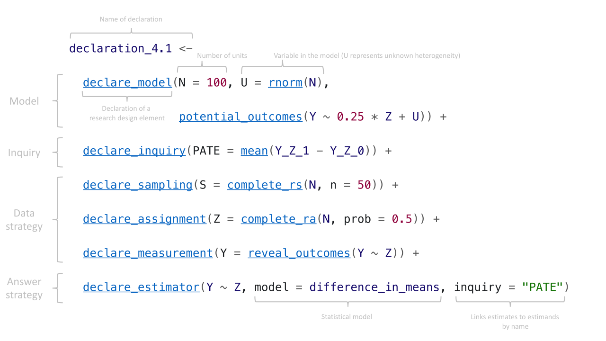

install.packages(c("DeclareDesign", "rdddr"))6 Getting started
This chapter serves as quick start guide for the code used throughout this book, and in particular the DeclareDesign package for the R programming language. DeclareDesign is a software implementation of every step of the declare-diagnose-redesign process. While you can declare, diagnose, and redesign using nearly any programming language, DeclareDesign is structured to make it easy to mix-and-match design elements while handling the tedious simulation bookkeeping behind the scenes.
First, we provide instructions for getting started in R and RStudio. We then introduce the code structure for the three steps of the research planning process: declaration, diagnose, and redesign. After this introduction, readers should be able to use the code, but perhaps not write it themselves yet. We devote a longer section (Chapter (designingcode?)) to getting started writing the code.
6.1 Installing R
You can download R for free from CRAN. We also recommend the free program RStudio, which provides a friendly interface to R. Both R and RStudio are available on Windows, Mac, and Linux.
Once you have R and RStudio installed, open up RStudio and install DeclareDesign and its related packages. These include three packages that enable specific steps in the research process: fabricatr for simulating social science data, randomizr for random sampling and random assignment, and estimatr for design-based estimators. You can also install rdddr, which includes datasets and helper functions used in the book. To install them all, copy the following code into your R console:
We also recommend that you install and get to know the tidyverse set of packages for data analysis, which we will use throughout:
install.packages("tidyverse")For introductions to R and the tidyverse we especially recommend the free resource R for Data Science.
All of the code in this book assumes that the DeclareDesign family of packages, the tidyverse suite, and the companion package to the book rdddr have been loaded. Once they have been installed on your computer, you can load them with the following code:
library(DeclareDesign)
library(tidyverse)
library(rdddr)6.2 Declaration
Designs are constructed from design elements: models, inquiries, data strategies, and answer strategies.
In DeclareDesign, each design element is made with a function that starts with the word declare. For example, we can declare an assignment procedure using declare_assignment as follows:
simple_random_assignment <-
declare_assignment(Z = simple_ra(N = N, prob = 0.6))Each element created by a declare_* function, perhaps surprisingly, is itself a function. The object simple_random_assignment is not a particular assignment — instead, it is a function that conducts assignment when called. Each time we call simple_random_assignment we get a different random assignment:
participants <- data.frame(ID = 1:100)
assignment_1 <- simple_random_assignment(participants)
assignment_2 <- simple_random_assignment(participants)
assignment_3 <- simple_random_assignment(participants)
bind_cols(assignment_1, assignment_2, assignment_3)#> New names:
#> • `ID` -> `ID...1`
#> • `Z` -> `Z...2`
#> • `ID` -> `ID...3`
#> • `Z` -> `Z...4`
#> • `ID` -> `ID...5`
#> • `Z` -> `Z...6`| ID 1 | Z 1 | ID 2 | Z 2 | ID 3 | Z 3 |
|---|---|---|---|---|---|
| 1 | 0 | 1 | 1 | 1 | 0 |
| 2 | 0 | 2 | 0 | 2 | 0 |
| 3 | 0 | 3 | 1 | 3 | 1 |
| 4 | 1 | 4 | 0 | 4 | 1 |
| 5 | 0 | 5 | 1 | 5 | 0 |
Every step in a research design can be declared using one of the declare_* functions. Table ?tbl-declarationfunctions collects these according to the four elements of a research design. In Chapter (designingcode?), we detail how to build each kind of step.
| Design component | Function | Description |
|---|---|---|
| Model | declare_model() |
background variables and potential outcomes |
| Inquiry | declare_inquiry() |
research questions |
| Data strategy | declare_sampling() |
sampling procedures |
declare_assignment() |
assignment procedures | |
declare_measurement() |
measurement procedures | |
| Answer strategy | declare_estimator() |
estimation procedures |
declare_test() |
testing procedures |
We use the + operator to build from elements of a design to a design. Declaration Declaration 6.1 shows the format of most declarations throughout the book. This declaration represents a two-arm randomized experiment with 100 units from which we aim to estimate the average treatment effect.
Declaration 6.1 (Two-arm randomized experiment) 
\(~\)
6.3 Diagnosis
Diagnosis is the process of simulating the design many times and calculating summary statistics about the design that describe its properties, which we call diagnosands. Once a design is declared, diagnosis is as simple as using the diagnose_design function on it.
Diagnosis 6.1 (Example design diagnosis)
diagnose_design(declaration_4.1, sims = 100)| Bias | RMSE | Power |
|---|---|---|
| -0.02 | 0.31 | 0.11 |
| (0.03) | (0.02) | (0.03) |
The output of the diagnosis includes the diagnosand values (top row), such as bias of \(-0.01\), and our uncertainty about the diagnosand value (bootstrapped standard error in parentheses in the bottom row). The uncertainty estimates tell us whether we have conducted enough simulations to precisely estimate the diagnosands. The fact that that the estimate of bias is \(-0.01\) and the standard error is \(0.02\) means that we cannot distinguish the amount of bias from no bias at all.
6.4 Redesign
We redesign to learn how the diagnosands change as design features change. We can do this using the redesign function over a range of sample sizes, which produces a list of designs.
Our simulation and diagnosis tools can operate directly on this list of designs:
diagnose_design(designs)6.5 Library of designs
In our DesignLibrary package, we have created a set of common designs as designers (functions that create designs from just a few parameters), so you can get started quickly.
library(DesignLibrary)
block_cluster_design <-
block_cluster_two_arm_designer(N = 1000, N_blocks = 10)6.6 Long term code usability
We have written the code examples with DeclareDesign version 1.0.0, the package version we released along with the book. We are committed to the long-term maintenance of this software, but inevitably, the evolution of the R ecosystem and further package development will mean that some of the printed code will break in the future. When this happens, we ask readers to refer to the book website, which we will maintain with up-to-date versions of the code and software.
However, a virtue of writing out designs in code is that they are explicit: the entire design is encoded in the declarations we provide. Even if the code itself won’t run, you can still use it to understand the design and to draw insights from the diagnosis.